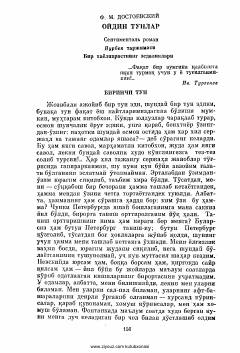

OTPeterburglik xayolparast yigitning oydin tunlardagi yolg'iz sarguzashtlari.
Fyodor Dostoyevskiyning 'Oydin tunlar' asari Nurbek tarjimasida o'zbek tiliga o'girilgan sentimental roman. Asar Peterburgda yolg'iz yashovchi bir xayolparast yigitning kechalari shahar ko'chalarida kezib, yangi tanishlar orttirishi va ichki kechinmalarini tasvirlaydi. Roman yolg'izlik, sevgi va orzular mavzularini chuqur his-tuyg'u bilan yoritadi.